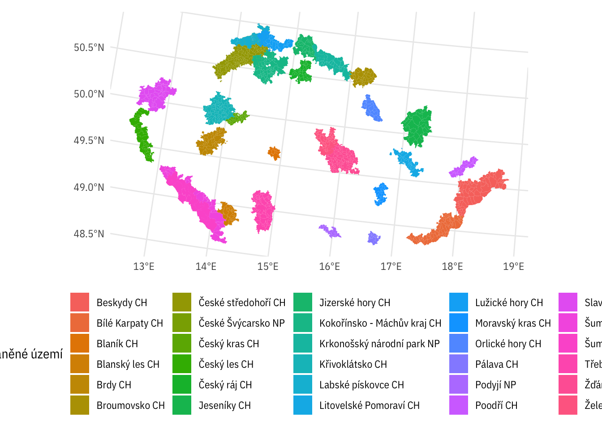

dt <- read_parquet(here::here("data-processed",
"misto_fix-02-gnames.parquet"))
dtl <- read_parquet(here::here("data-processed",
"misto_fix-02-gnames_long-geo.parquet"))
ops <- read_parquet(here::here("data-processed", "op-codes.parquet"))
prj_meta <- read_parquet(here::here("data-processed", "prj-esif-meta.parquet"))
dt_chkonp <- read_parquet(here::here("data-processed", "prj_chkonp.parquet"))
prj_no_obec <- read_parquet(here::here("data-processed", "prj_id_noobec.parquet"))
dt_geostructure_bylvl <- read_parquet(here::here("data-processed", "dt_geostructure_by-lvl.parquet"))
dt_geostructure_byprj <- read_parquet(here::here("data-processed", "dt_geostructure_by-prj.parquet"))source(here::here("read_metadata.R"))zuj_geo <- read_rds(here::here("data-processed", "geo_zuj-all.rds"))chu_geo <- CzechData::load_Data50("ChraneneUzemi") %>%
group_by(KODCHU, NAZEV, KATEGCHU) %>%
summarise(pocet = n()) %>%
st_cast("MULTIPOLYGON") %>%
st_as_sf() %>%
ungroup()## ℹ Downloading roughly 16 MB, this can take a while.## ✓ Data downloaded and unpacked.## `summarise()` regrouping output by 'KODCHU', 'NAZEV' (override with `.groups` argument)# mapview::mapview(chu_geo, zcol = "NAZEV")prj_noplace <- setdiff(dt$prj_id, dtl$prj_id)dt_chkonp$prj_id %in% dt$prj_id %>% table()## .
## FALSE TRUE
## 70 663dt_chkonp %>%
# jen projekty v našich datech
filter(!prj_id %in% dt$prj_id) %>%
# jen programu 1-9
filter(str_detect(prj_id, "CZ\\.0[1-8]")) %>%
distinct(prj_id)Cca 39 projektů označených CHKO/NP nemáme v datech - jsou všechny z nedávných (a snad tedy stále otevřených) výzev, tj. projekty, které skutečně nově přibyly. (Celkem těchto projektů je 64, ty zbylé jsou v OPR a PRV).
prj_noplace %in% dt_chkonp$prj_id %>% table()## .
## FALSE TRUE
## 1 26dt %>%
filter(prj_id %in% prj_noplace) %>%
distinct(prj_id, op_id) %>%
count(op_id)dt_chkonp %>%
left_join(prj_meta) %>%
distinct(prj_id, op_id) %>%
mutate(noobec = prj_id %in% prj_no_obec$prj_id,
noplace = prj_id %in% prj_noplace) %>%
count(op_id, noobec, noplace) %>%
spread(noobec, n)## Joining, by = "prj_id"Takže data o CHKO/NP nám pomůžou rozřešit projekty s chybějící lokalizací a pak ještě cca 30 projektů bez informace o obci.
dt_chkonp %>%
left_join(prj_meta) %>%
distinct(prj_id, op_id) %>%
mutate(noobec = prj_id %in% prj_no_obec$prj_id,
noplace = prj_id %in% prj_noplace) %>%
filter(noobec) %>%
distinct(prj_id, op_id)## Joining, by = "prj_id"Podíváme se na ně do hlavního datasetu:
dtl %>%
filter(typ == "id") %>%
distinct(prj_id, prj_nazev, p_nazev, level) %>%
filter(prj_id %in% prj_no_obec$prj_id & prj_id %in% dt_chkonp$prj_id) %>%
left_join(dt_geostructure_bylvl)## Joining, by = c("prj_id", "level")Jaká je struktura míst realizace u těch zbylých?
dtl %>%
filter(prj_id %in% dt_chkonp$prj_id) %>%
group_by(prj_id) %>%
mutate(toplevel = min(as.numeric(level))) %>%
group_by(op_id, prj_id, level, toplevel, p_nazev, prj_nazev) %>%
summarise(n_units = length(unique(value)))## `summarise()` regrouping output by 'op_id', 'prj_id', 'level', 'toplevel', 'p_nazev' (override with `.groups` argument)To vypadá dost důvěryhodně, minimálně tam, kde na tom sejde - u IROPu a OP ŽP. Počty obcí a dalších území na projektech působí, že není potřeba je dopočítávat z území CHKO/NP ani že jsou tam uměle nastrkané všechny obce překrývající se s chráněným územím.
Kolik je jakých CHKO/NP?
chu_geo %>%
st_set_geometry(NULL) %>%
count(KATEGCHU)Najít v datech všechny bez místa
dt %>%
filter(prj_id %in% prj_noplace) %>%
select(prj_id, prj_nazev, p_nazev, p_sidlo_nazev, prj_anotace) Kolik je u každého z nich řádků?
dt %>%
filter(prj_id %in% prj_noplace) %>%
select(op_id, prj_id, prj_nazev, p_nazev, p_sidlo_nazev, prj_anotace) %>%
count(prj_id, op_id, sort = T) %>%
arrange(desc(n), prj_id)A kolik řádků je u stejných projektů ve vyjetině s rozpadem na CHKO/NP
dt_chkonp %>%
filter(prj_id %in% prj_noplace) %>%
left_join(prj_meta) %>%
count(prj_id, op_id, sort = T) %>%
arrange(desc(n), prj_id)## Joining, by = "prj_id"Takže je to to samé až na projekt OP Z, který v datech s rozpadem CHKO/NP není.
dt_with_chkonp <- dt %>%
filter(prj_id %in% prj_noplace, op_id == "OP ZP") %>%
distinct(prj_id) %>%
left_join(dt_chkonp)## Joining, by = "prj_id"dt_with_chkonp %>%
count(prj_nazev, prj_id, sort = T)obceschu_file <- here::here("data-processed", "zuj-s-chu.rds")
if(file.exists(obceschu_file)) {
zuj_s_chu <- read_rds(obceschu_file)
} else {
handlers(handler_progress(format = "[:bar] :percent ETA: :eta",
complete = "◼",
incomplete = " ",
current = "▸"))
chu_krovak <- chu_geo %>%
st_transform(5514)
plan(multiprocess)
with_progress(
{
p <- progressor(along = zuj_geo$kod)
zuj_v_chu <- zuj_geo %>%
select(kod, nazev) %>%
mutate(has_chu = future_map(geometry,
function(x) {
p(sprintf("x=%s", x))
st_intersects(x, chu_krovak)
}))
}
)
zuj_s_chu <- zuj_v_chu %>%
mutate(chu_num = map(has_chu, `[[`, 1)) %>%
unnest(chu_num) %>%
left_join(chu_geo %>%
st_set_geometry(NULL) %>%
select(-pocet) %>%
mutate(chu_num = row_number()))
write_rds(zuj_s_chu, obceschu_file)
}zuj_s_chu %>%
st_simplify(preserveTopology = TRUE, dTolerance = 100) %>%
ggplot(aes(fill = paste(NAZEV, str_sub(KATEGCHU, 1, 2)))) +
geom_sf(colour = NA) +
theme(legend.position = "bottom") +
labs(fill = "Chráněné území")
mapview::mapview(zuj_s_chu, zcol = "NAZEV") %>%
leafem::addFeatures(chu_geo)zuj_s_chu %>%
st_set_geometry(NULL) %>%
count(NAZEV, KATEGCHU)dt_chkonp %>%
count(chkonp_nazev)zuj_s_chu_to_join <- zuj_s_chu %>%
st_set_geometry(NULL) %>%
select(zuj_id = kod, zuj_nazev = nazev,
chkonp_nazev = NAZEV, chkonp_typ = KATEGCHU) %>%
mutate(chkonp_nazev = if_else(chkonp_typ == "NP" &
chkonp_nazev %in% c("Šumava", "České Švýcarsko", "Podyjí"),
paste("NP", chkonp_nazev), chkonp_nazev))
dt_with_chuobce <- dt_with_chkonp %>%
mutate(chkonp_nazev = recode(chkonp_nazev,
`Kokořínsko` = "Kokořínsko - Máchův kraj")) %>%
left_join(zuj_s_chu_to_join) %>%
mutate(chkonp_idtext = chkonp_nazev,
chkonp_nazev = str_remove(chkonp_nazev, "^NP "))## Joining, by = "chkonp_nazev"dt_with_chuobce %>%
group_by(chkonp_nazev, chkonp_typ) %>%
count()dir.create(here::here("data-processed", "dtl_resolved_placeless"))## Warning in dir.create(here::here("data-processed", "dtl_resolved_placeless")): '/Users/petr/github/mmr-esif-clean/data-processed/dtl_resolved_placeless' already existsdt_with_chuobce_reshaped <- dt_with_chuobce %>%
mutate(level = if_else(zuj_id %in% ids_short$obec, "obec", "zuj"),
level_orig = "chkonp") %>%
rename_with(~str_remove(., "zuj_")) %>%
rename(id_orig = chkonp_idtext, value = id) %>%
mutate(obec_puvod = "doplnění obce nebo ZÚJ podle chráněných území",
rozpad_typ = "nic",
level = factor(level, levels = geolevels, ordered = T),
rozpad_duvod = NA_character_,
id_orig = NA_character_,
level_orig = "chkonp") %>%
left_join(prj_meta %>% select(prj_id, op_id)) %>%
group_by(op_id) %>%
mutate(chunk = floor(row_number()/5e5) + 1,
chunk = as.integer(chunk)) %>%
group_by(prj_id) %>%
mutate(radek = row_number()) %>%
group_by(obec_puvod, op_id, chunk, rozpad_typ)## Joining, by = "prj_id"write_parquet(dt_with_chuobce_reshaped %>%
select(prj_id, radek, op_id, level, geo_id = value, level_orig,
geo_id_orig = id_orig,
rozpad_typ, rozpad_duvod, obec_puvod, chunk),
here::here("data-processed", "dtl_resolved_placeless", "all.parquet"))
write_parquet(dt_with_chuobce_reshaped,
here::here("data-processed", "dt_noplace_filled-chudetail.parquet"))